- Домокомплекты "Солмадом"
- ЛПХ "Домик в Лесу"
- Мастерская "Лампы из леса"
- Сказкотерапия Марии Яката
- Домашняя сыроварня "Cheese Me"
- Гидролаты Лунной Элли
- Обучение английскому языку
- Швейная мастерская "Forest Patch"
- Керамическая мастерская "Тепло"
- Массаж для женщин
- Варганы и ловцы снов
- Проект "Крот Новосвободный"
Экопроизводство домокомплектов из соломенных панелей
Солмадом
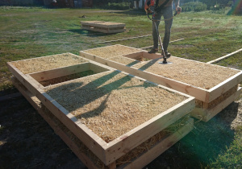
Посмотреть
Мы стремимся производить максимально качественные домокомплекты из натуральных материалов по демократичным и гибким ценам, индивидуально подходим к запросам каждого клиента.
Даем гарантии на быстрое проектирование, производство и монтаж наших домокомплектов.
Скидки на проектирование и доставку!
Работаем по всей территории РФ и стран таможенного союза!
Натуральные продукты и косметика
от ЛПХ "Домик в Лесу"
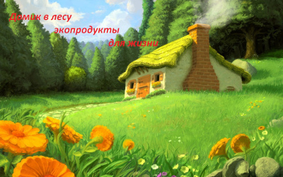
Посмотреть
Семейное подсобное хозяйство и мастерская. Занимается огородом, садом, изготовлением натуральных продуктов и предметов быта, выращиванием саженцев и сбором семян.
Натуральное мыло, живые масла, ореховая мука, натуральный яблочный уксус, гидролаты, сиропы-варенья, соленья.
Все изготовлено вручную для своей семьи!
Заказы отправляем по всей России почтой. Отправка в ближнее зарубежье обсуждается.
Семейная мастерская светильников и уютного декора"Уютный свет"
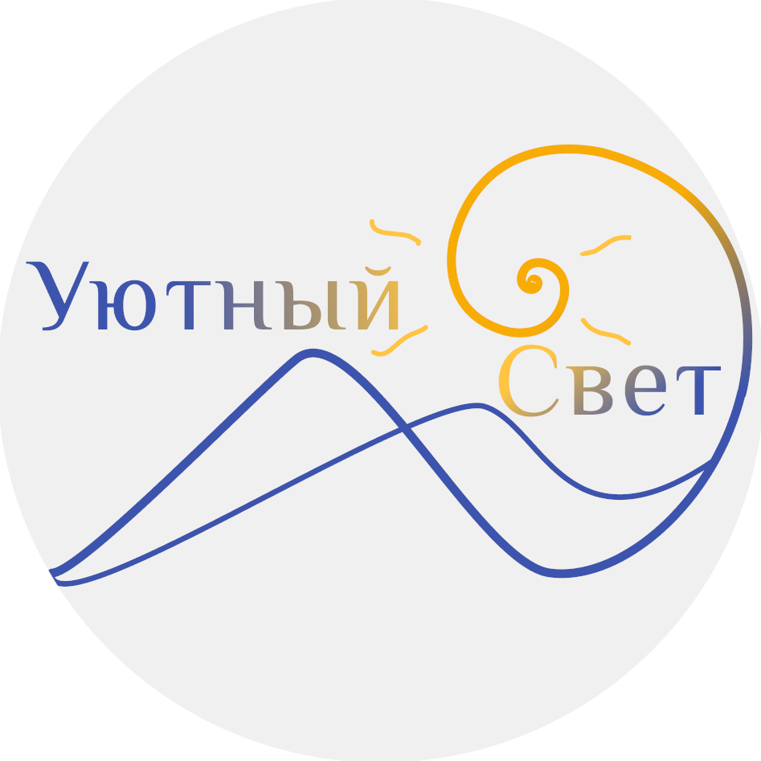
Посмотреть
Стильные авторские светильники и ночники из цельного дерева и фанеры высшего сорта.
Декоративные и функциональные предметы интерьера.
В наличии и под заказ по вашей идее.
Все, что сделает атмосферу в вашем доме уютнее.
Волшебные терапевтические сказки
Марии Яката
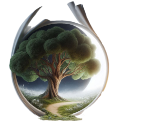
Посмотреть
Откройте для себя сказкотерапию - сказки на стыке психологии и искусства!
Если вы ищете смысл жизни, испытываете эмоциональное выгорание, у вас проблемы в отношениях с близкими вам людьми, наши сессии помогут вам разобраться в себе.
Через волшебные истории мы исследуем переживания и страхи, разберем конфликты и найдем новые горизонты.
Путешествие через мир сказочных метафор - это мягкий бережный способ помощи себе на своем пути.
Домашняя сыроварня "Cheese Me"
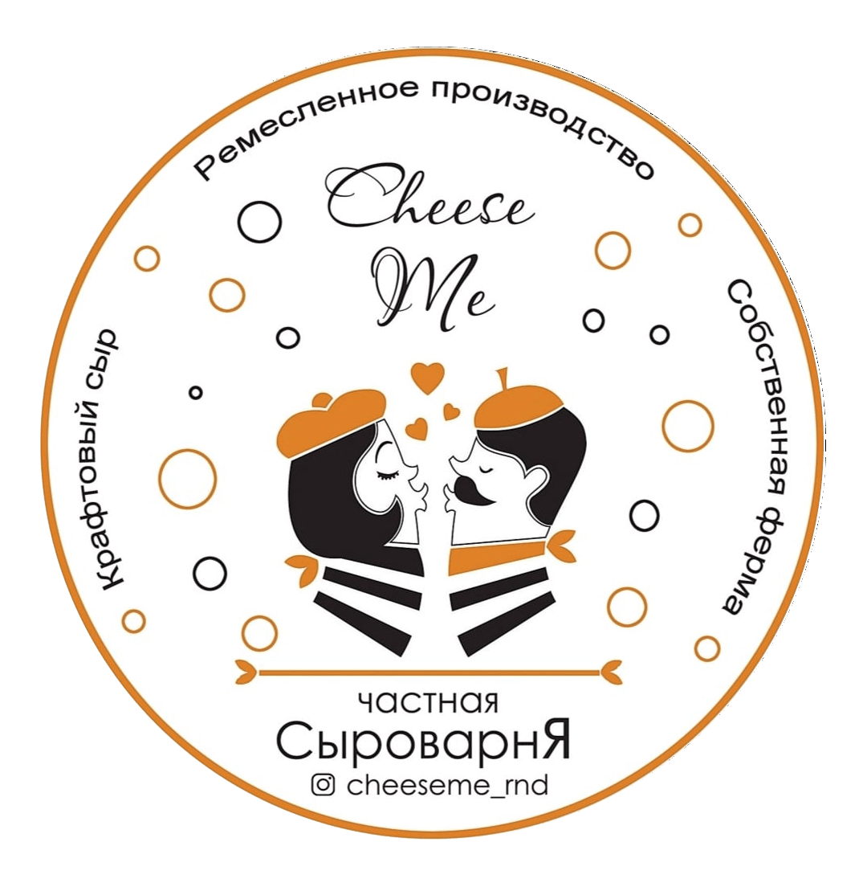
Посмотреть
Наша мини-ферма расположена на краю земли, где животные питаются только лучшей травой и получают уход и заботу специалистов.
Именно здесь появляются на свет самые вкусные сыры.
Cheese Me предлагает мягкие и твердые, молодые и зрелые, в натуральной корочке, в специях и травах. Эти сыры - настоящий шедевр, созданный с любовью и заботой.
Добрые гидролаты
Лунной Элли
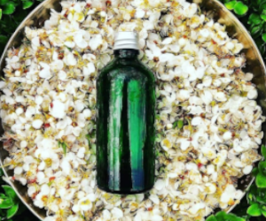
Посмотреть
Моя любовь к гидролатам пришла с первого момента ощущения на коже. Тогда я поняла, что могу и хочу делать их для себя и для других. Для меня это идеальное средство ухода за собой: максимально простое, понятное и, при этом, эффективное.
Важнейшие слагаемые хорошего гидролата — это качество и количество сырья, время и внимание уделённое процессу дестилляции.
Я не гоню гидролаты, а делаю их с любовью в спокойном темпе и настроении, поэтому мои гидролаты хранятся до 6 месяцев.
Обучение английскому языку - Ваш путь к свободному английскому с удовольствием!
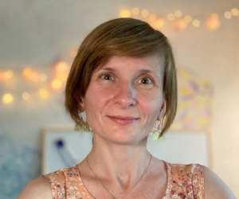
Посмотреть
Хотите говорить на английском уверенно?
Я помогу вам преодолеть языковой барьер.
Вместе мы сделаем изучение английского увлекательным и эффективным!
Индивидуальный подход, интересные материалы и гибкий график — всё для вашего успеха!
Занятия для детей и взрослых под любой уровень и цели.
Швейная мастерская лоскутной одежды Forest Patch
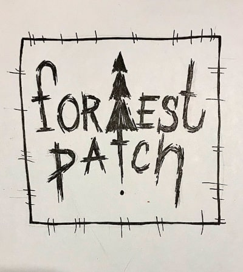
Посмотреть
Лоскутные юбки, платья, сарафаны, шопперы, кастомайзинг одежды, бохо-одежда, которая всегда существует только в единственном экземпляре.
В наличии и под заказ.
Линогравюрная печать на ткани авторских рисунков.
Комфорт, стиль и экологичные материалы — вот что делает наши изделия особенными.
Керамическая мастерская "Тепло"

Авторская керамическая посуда и предметы интерьера
В наличии и под заказ.
Мастер-классы по керамике
Мы приглашаем всех любителей творчества и желающих научиться делать керамику своими руками.
Независимо от вашего уровня подготовки, вы получите удовольствие от процесса создания своего собственного керамического изделия.
Принять участие могут как взрослые, так и дети.
Различные виды массажа от Ольги Домбровской
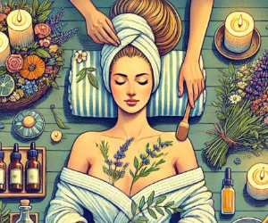
Посмотреть
Восстановите свою энергию - найдите время для себя.
Хотите восстановить силы?
Насладитесь атмосферой уюта и заботы — профессиональная массажистка Ольга Домбровская, с профильным медицинским образованием, поможет вам расслабиться и восстановить силы.
Варганы, ловцы снов и авторские ретриты в горах Адыгеи
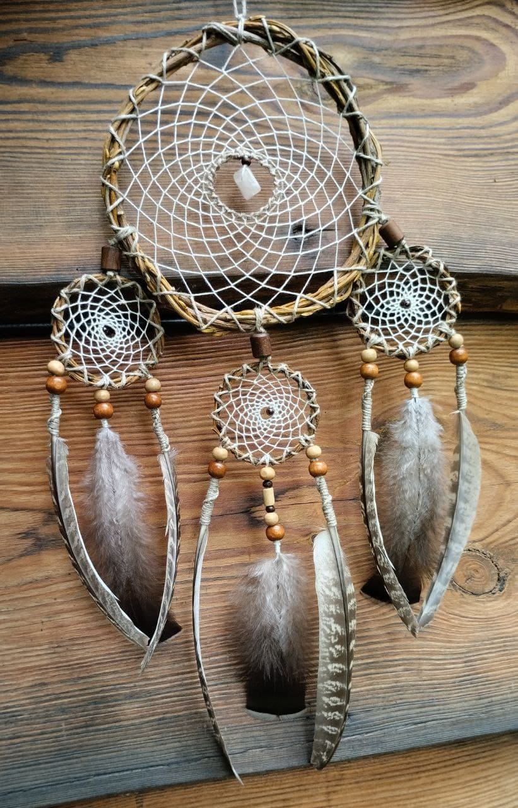
Посмотреть
Окунитесь в мир гармонии и покоя с чарующими звуками варгана. Научитесь на нем играть и выберите свой собственный инструмент.
Авторские ловцы снов и мастер-классы по их изготовлению.
Женские ретриты и авторские туры в горах Адыгеи.
Творческий проект
"Крот Новосвободный"
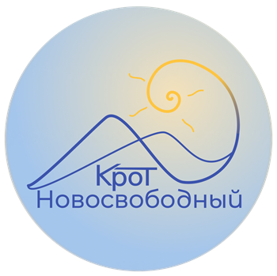
Посмотреть
Волшебный сад с гостевыми домиками, площадкой для кемпинга и пространством для занятий и игр.
Сейчас в процессе строительства.